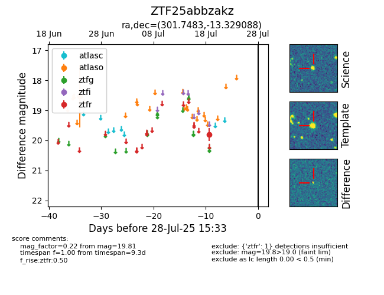

Target ZTF25abbzakz at 2025-07-23 11:52, see:
FINK: fink-portal.org/ZTF25abbzakz
Lasair: lasair-ztf.lsst.ac.uk/objects/ZTF25abbzakz
ALeRCE: alerce.online/object/ZTF25abbzakz
alt names
ZTF25abbzakz (ztf,fink)
coordinates:
equatorial (ra, dec) = (301.7483,-13.32909)
galactic (l, b) = (29.1077,-22.67362)
photometry
last ztfr=19.81
1 ztfr detections
